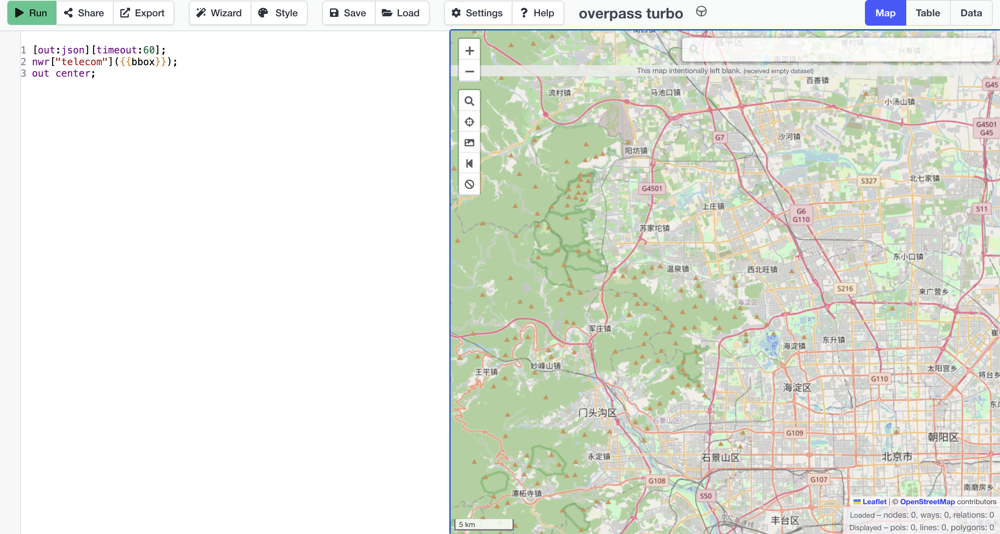
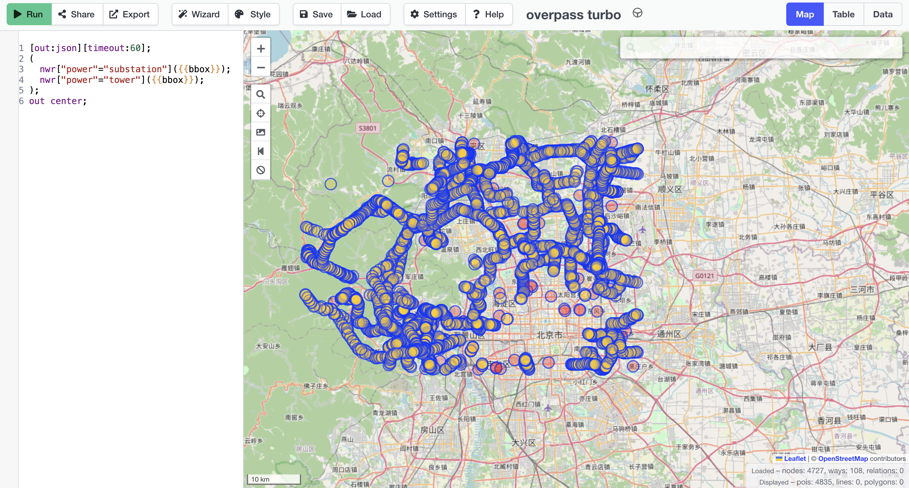
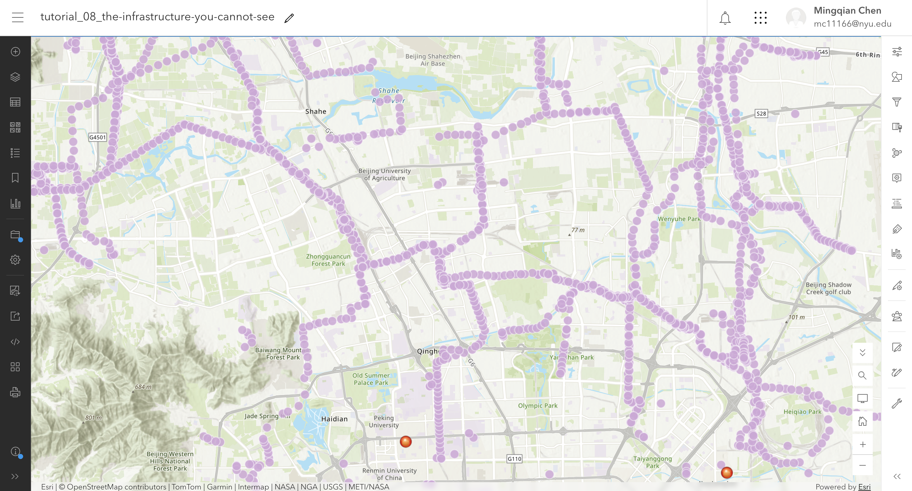
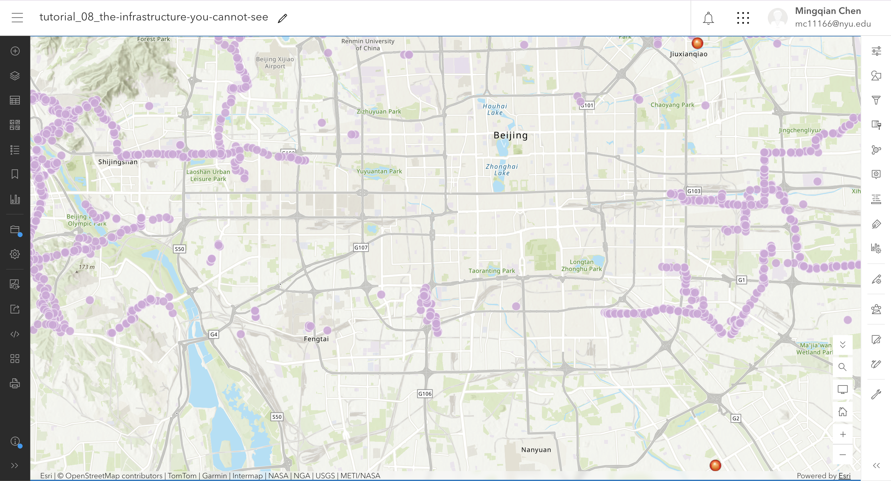

The question
What network infrastructure is near my site, and what is absent from the open data? The scale and place of digital infrastructure determine what is visible and what is obscured.
The data
Submarine Cable Map (TeleGeography): Screenshots are republishable under CC BY-SA 4.0 with credit. The underlying data is restricted to subscribers. Verdict: May screenshot, may not download data.
OpenStreetMap (via Overpass Turbo): The data is under the ODbL. Verdict: May republish as a Produced Work with attribution and ODbL notice; may republish data as a Derivative Database with share-alike.
Data Center Map: Terms prohibit scraping or reproducing data. Verdict: May not copy or distribute.
The method
I queried Overpass Turbo within the bounding box of my Beijing site on November 12, 2026. First, I queried for all telecom tags. Second, I queried for power=substation and power=tower to map the visible electrical grid, and exported the result as a GeoJSON. I manually typed three data center locations (Zhongguancun, Jiuxianqiao, and Yizhuang) from commercial inventories into a CSV, which I added as a separate layer to show the contrast in the Beijing metropolitan area.
The evidence
1. The Overpass Query Results

telecom tags in Beijing. The map returned an empty dataset (0 objects), proving that telecommunications infrastructure is systemically absent from the open map.
power=substation and power=tower in the exact same bounding box. Thousands of objects (blue points) were returned, showing the stark difference in data coverage.2. The Rendered Maps in ArcGIS


What I found
1. Expectation vs. Data. I guessed that I was allowed to screenshot the Submarine Cable Map (Yes) but NOT allowed to publish OpenStreetMap data on a web page (No). The evidence showed I was wrong about OSM: I am explicitly allowed to publish it as long as I attribute it and include the ODbL notice. My prediction of Shanghai having 20 data centers was also off; commercial inventories list 50-65, while OpenStreetMap volunteers have only mapped 4 in the entire municipality. Most surprisingly, OpenStreetMap only records 58 cable landing stations globally, compared to 1,925 known to the industry.
2. The query and the absence. The telecom query returned exactly zero objects (Figure 1), while the power query returned thousands (Figure 2). The zero result means OpenStreetMap records no telecom objects in this box. It does not mean there are no telecom objects there. The electrical towers are visible from the air, which is how volunteers trace them. The cables are buried underground, and the landing stations are behind fences. The data is missing because of the vantage point of the recorder.
3. The scale illusion. As shown in my ArcGIS maps, when zoomed out to the urban core (Figure 4), the physical power grid blends into the background, leaving the three data centers highly visible. When zoomed in locally (Figure 3), the power grid dominates the visual field. This proves that "visibility" is not just about what is underground, but also about the map's scale. We can only see the network if we choose the right scale.
4. Republication. TeleGeography allows screenshots but not data. OSM allows maps with ODbL notices but puts share-alike on exported databases. Data Center Map prohibits reproduction entirely.
What this does not show
Proxy sentence: I am using mapped infrastructure to stand for what exists at my site, and it might fail because OpenStreetMap is traced from aerial imagery, so underground cables and enclosed data halls are systematically absent, while overhead power lines are nearly complete.
The data center points are not the truth either; they are self-reported by operators who want to be found, and the open map has no data on what is actually inside those buildings.
AI-usage disclosure
AI-assisted for checking the Overpass query syntax in the week-08 entry, using DeepSeek. I verified it by running the query and confirming the result count matched the map. The choice of extent, reading of the three licence pages, counts and proxy sentence are my own.
Personal reflections have been submitted privately in Brightspace.